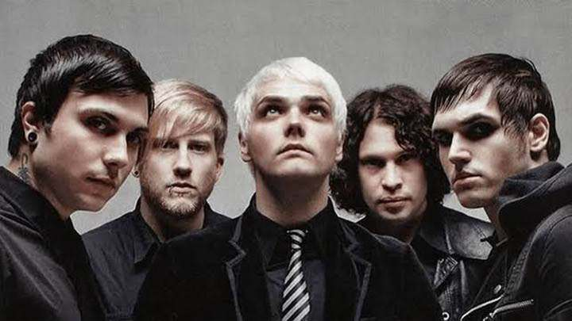
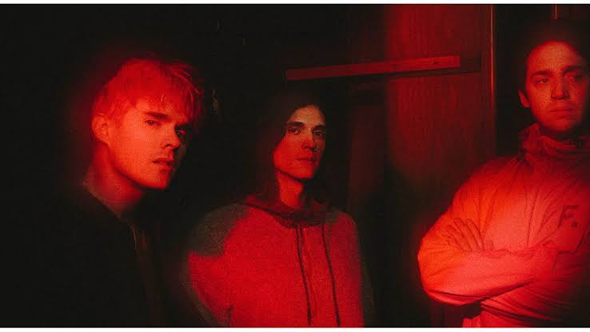
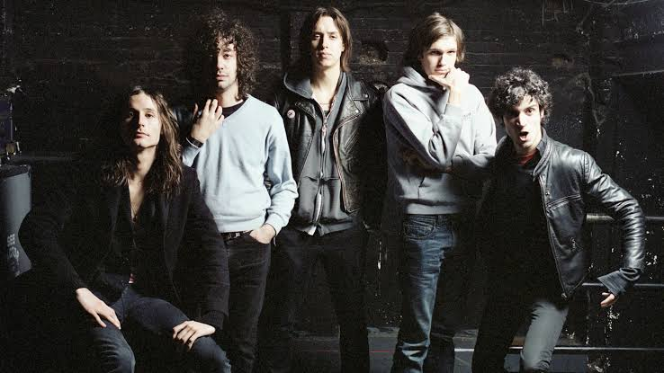
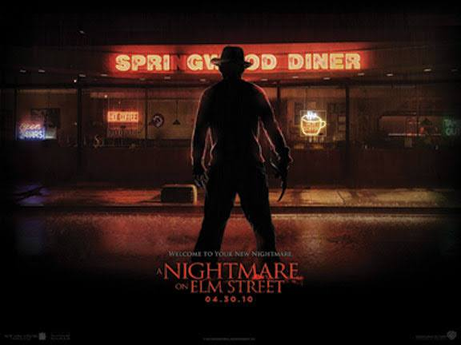
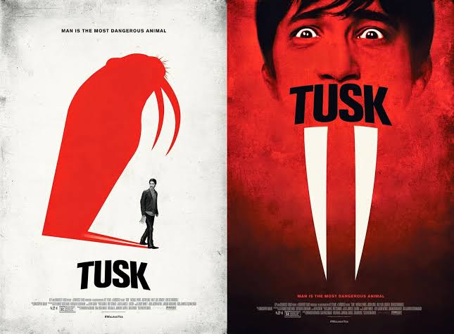
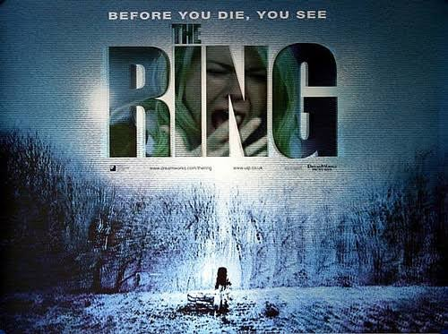
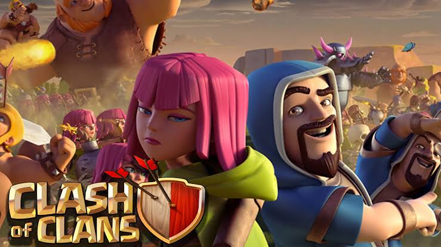
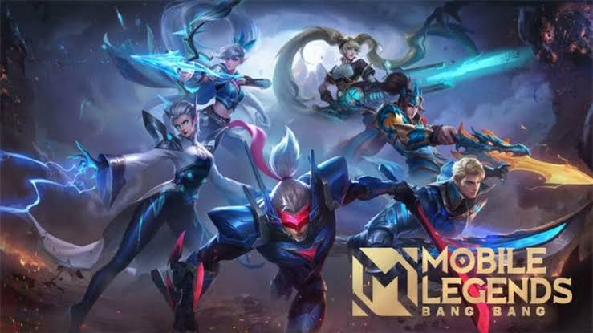
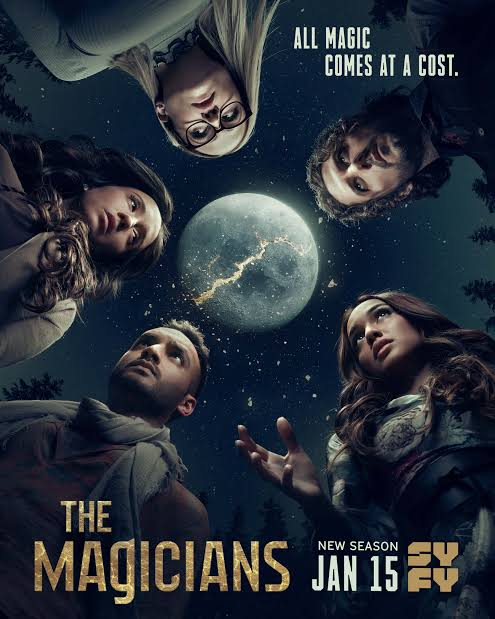

A Compilation of my Favorite things
Most Favorite Bands
  I grew up listening to a radio as i help my mom prepares her "ihaw-ihaw paninda" every afternoon. I really love music. Cant even finished a day without wearing a headset. But all of the genres, i am very fond to any kind of rock, like alt-rock, pop rock, indierock, some electro pop, emo, punks, and some metal. Above are the three pictures of my most listen bands. The My chemical Romance on the left, Waterparks in the middle and The strokes on the right side.
Movies
  I love horror movies a lot. I can litterally have a whole year halloween celebration with just watching bunch or horror films every night. The pictures above are my top 3 horror films The nightmare on elm Street, Tusk and The ring. Most of them became my favorites not just because of the story line but they holds a happy childhood memory in me.
Mobile Games
 In my free time aside from watching movies i spend it playing mobile games such as clash of clan and mobile legends.
Favorites Colors

I love Green since i was a kid. Its a color of nature and i find it very appealing. It's like calmness. Any type of green but especially the dark ones and i also love color black.
TV Show
I have watched alots of tv series internationally and locally but among all of them im really drawn to this show "The magicians". They say its like hogwarts but for graduate students and to be fair it kinda is. Its a fiction involving magical fantasy world, with great characters, suspense, chilling storyline and a little comedy. I really love watching it. It was my comfort show.
Physical Activity
Im not much into exercising but I really love spending time especially in the afternoon whenever i have the energy or time to just take a short walk. Sometimes my sister and my mom will join me and that becomes a quality time with them.